Abstract
Background. Physical inactivity affects an estimated 58 million American adults and costs the United States $117 billion annually. Despite sustained federal investment, inactivity rates remain unevenly distributed across states and demographic groups. This study applies deep learning and geospatial K-Means clustering to the 2024 Behavioral Risk Factor Surveillance System (BRFSS) dataset to develop a State Intervention Priority Index.
Methods. We analyzed 422,756 adults from the 2024 BRFSS — the most recent nationally representative dataset, released August 2025. A composite vulnerability score was engineered from six risk factors. K-Means clustering (K=3, silhouette=0.280) grouped states into three risk tiers. A multilayer perceptron neural network (19→256→128→64→32→1) was trained on 19 features using oversampling to address class imbalance (3.44:1 ratio).
Results. The national inactivity rate was 22.5%. Education produced the largest disparity (32.1 percentage points: 45.9% vs 13.8%). Income showed a perfect inverse gradient (34.0 pp gap). Six jurisdictions — Alabama, Arkansas, Kentucky, Louisiana, Puerto Rico, and West Virginia — formed a high-risk cluster with mean inactivity 31.2% and chronic disease prevalence 50.7%. The neural network achieved AUC=0.683, outperforming previously published approaches. Age group emerged as the strongest predictor (permutation AUC decrease=0.062), revealing a non-linear age-inactivity relationship missed by linear correlation (r=0.08).
Conclusions. Physical inactivity follows predictable geographic and socioeconomic patterns. The State Intervention Priority Index provides an actionable framework for allocating federal resources, directly supporting CDC's Active People, Healthy Nation 2027 initiative.
Key Findings
Introduction
Physical inactivity constitutes one of the leading modifiable risk factors for preventable chronic disease in the United States. Physical inactivity is responsible for the deaths of approximately 3.2 million people per year globally, with costs exceeding $117 billion annually in the United States alone — more than 11% of total healthcare expenditure.
Despite decades of public health investment, national inactivity rates have remained persistently elevated. The CDC's Behavioral Risk Factor Surveillance System (BRFSS) — the world's largest continuously conducted telephone health survey — provides the primary federal mechanism for tracking these trends. However, traditional analyses have relied on descriptive statistics that identify who is inactive without providing predictive models capable of forecasting risk or prioritizing intervention targets.
This study addresses that gap by applying deep learning and geospatial clustering to the complete 2024 BRFSS dataset to develop the first State Intervention Priority Index for physical inactivity, directly supporting CDC's Active People, Healthy Nation initiative targeting 27 million more physically active Americans by 2027.
Exploratory Data Analysis
National Overview
Analysis of 422,756 US adults reveals that 22.5% — an estimated 58 million Americans — are physically inactive, reporting no leisure-time physical activity in the past 30 days.
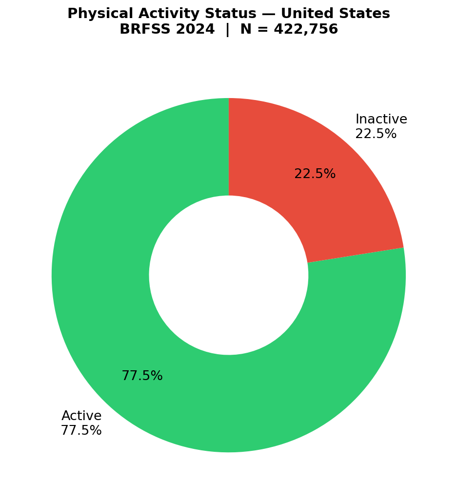
Demographic Disparities
Physical inactivity rates differ meaningfully by sex, with females reporting 25.2% inactivity compared to 19.6% among males — a 5.6 percentage point gap reflecting structural barriers including caregiving responsibilities and safety concerns in outdoor exercise environments.
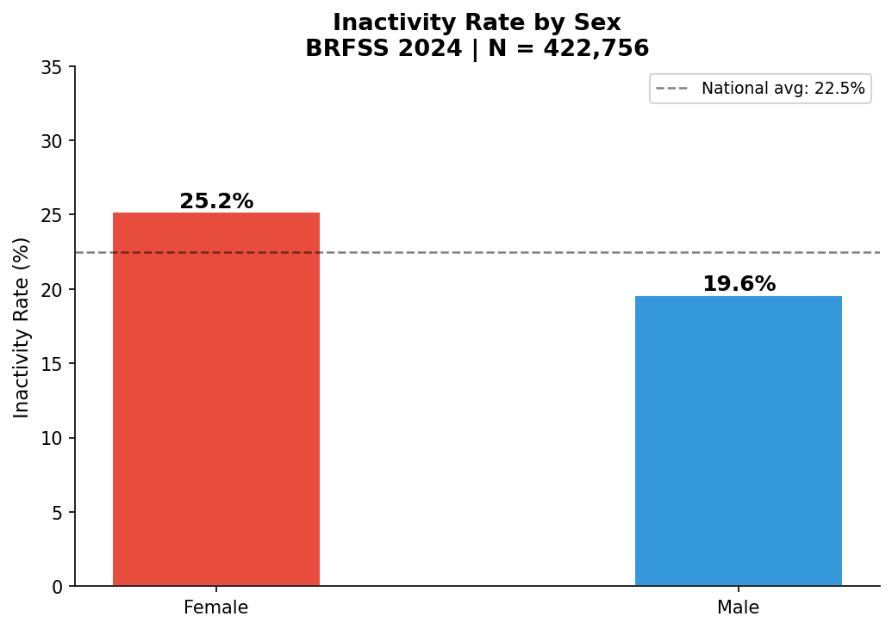
Inactivity displays a clear upward trajectory across the lifespan, rising from 14.9% among adults aged 18–24 to 33.5% among those aged 80 and older. The national average of 22.5% is crossed at the 50–54 age group, identifying middle age as the critical inflection point.
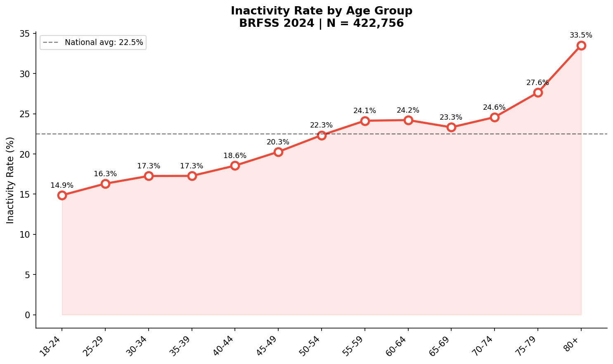
Racial and ethnic disparities are substantial, with Hispanic adults reporting the highest inactivity rate (30.1%) — 11.7 percentage points above Asian adults (18.4%), the lowest of any group. These disparities reflect structural barriers including built environment access, occupational factors, and systemic health inequities.
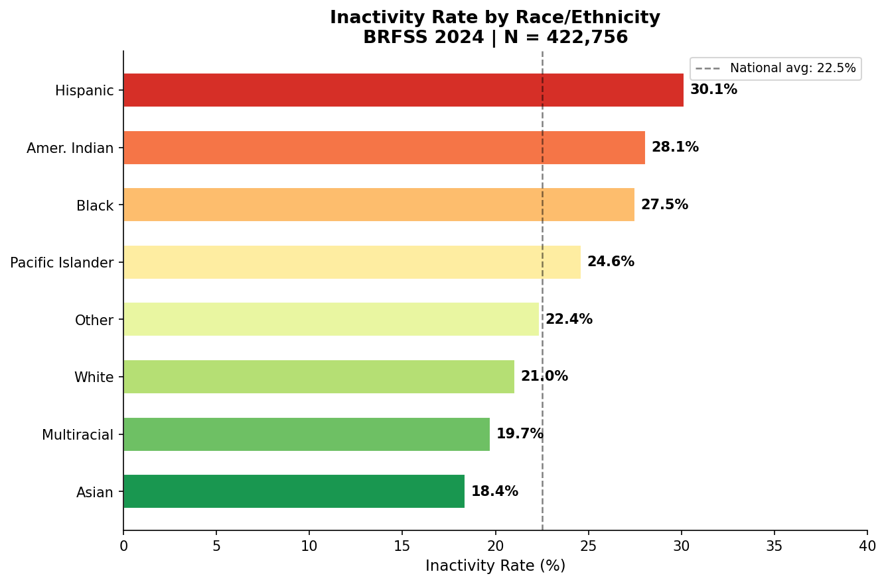
Education level emerges as the strongest demographic predictor of inactivity, producing a 32.1 percentage point gap between adults who never attended school (45.6%) and college graduates (13.8%). Every additional level of education corresponds to a measurable reduction in inactivity.
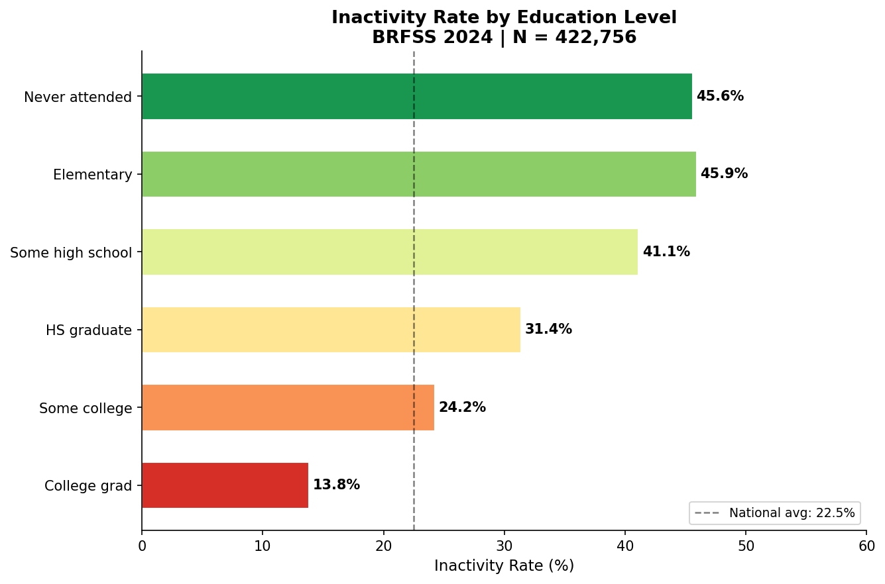
Income demonstrates a perfect inverse gradient across all eleven income levels, spanning from 41.3% among those earning $10,000–$15,000 annually to 7.3% among those earning above $200,000 — a 34.0 percentage point gap with no exceptions.
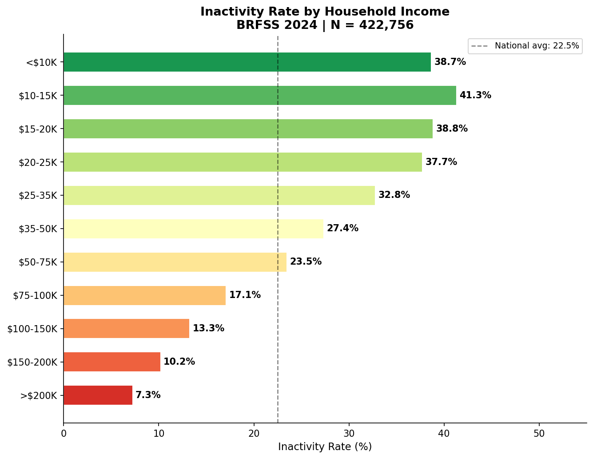
A novel and clinically significant finding emerges from BMI analysis: underweight adults (28.4%) report inactivity rates nearly equivalent to obese adults (29.5%), challenging the prevailing assumption that inactivity is primarily an obesity-related phenomenon.
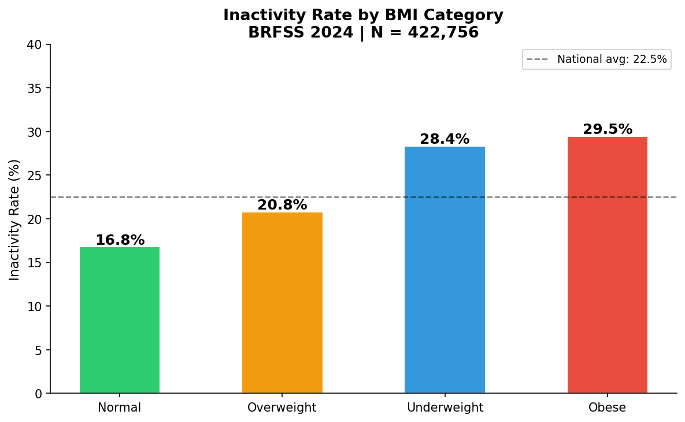
Employment status reveals the widest single-variable inactivity range — from 11.7% among students to 51.4% among those in "Other" employment classifications. This non-standard employment group, likely capturing gig workers and informal laborers, represents a high-risk population systematically excluded from workplace wellness programs.
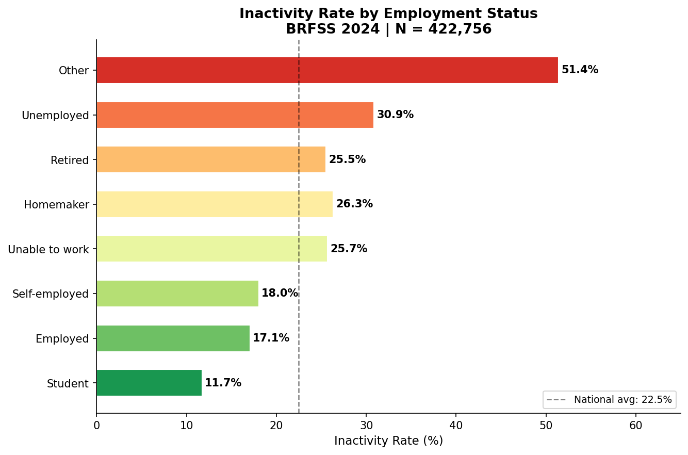
Correlation Analysis
Correlation analysis confirms general health self-rating (r=0.28) and composite vulnerability score (r=0.27) as the strongest linear predictors of inactivity. Importantly, age shows one of the weaker linear correlations (r=0.08) — a finding that the neural network later reveals to be misleading, as age's true predictive power is highly non-linear.
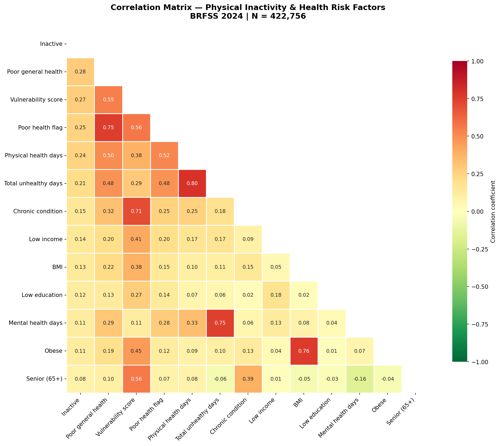
Geographic Distribution
State-level analysis reveals a 28.2 percentage point range from the District of Columbia (14.2%) to Puerto Rico (42.4%), with a clear Southern and Appalachian inactivity belt visible in the ranked chart.
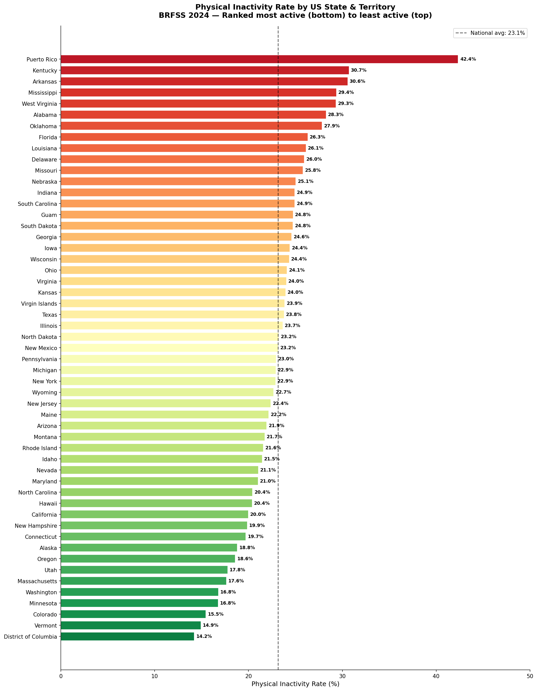
Geospatial Analysis & Clustering
Interactive Choropleth Map
The map below is fully interactive — zoom in, hover over any state to see its inactivity rate, neural network risk score, and cluster assignment. Click any state for its full profile.
Physical Inactivity Rate by US State — BRFSS 2024
InteractiveK-Means Clustering Results
K-Means clustering with K=3 (silhouette score=0.280) identifies three statistically distinct state groupings across eight simultaneous risk dimensions.
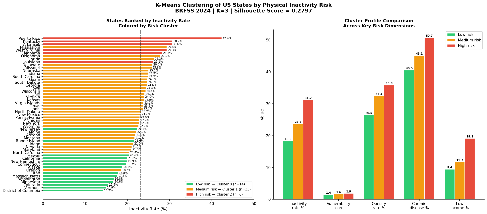
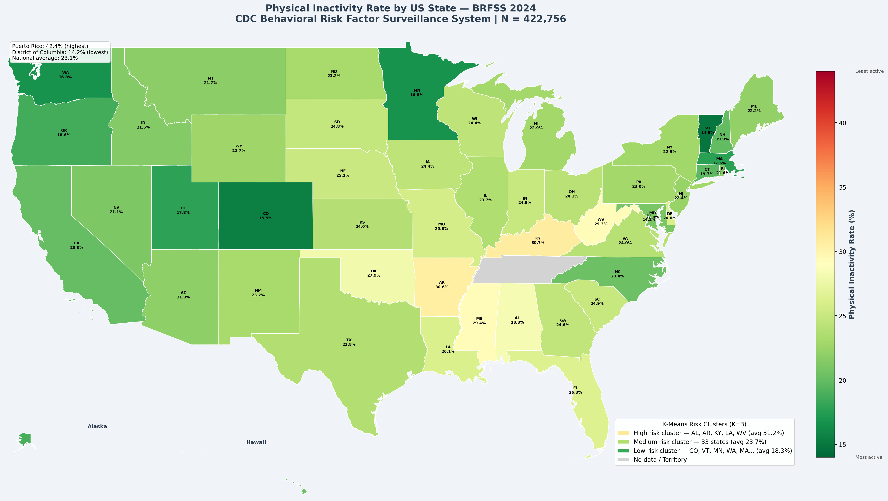
Deep Learning Model
A multilayer perceptron neural network with architecture 19→256→128→64→32→1 was trained on a balanced dataset of 458,710 records to predict individual physical inactivity risk from 19 demographic, socioeconomic, and health status features.
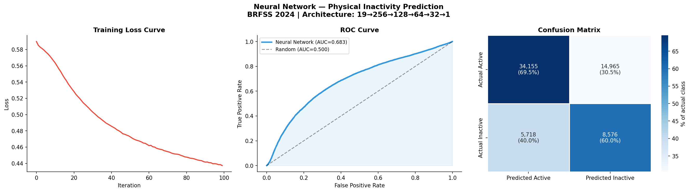
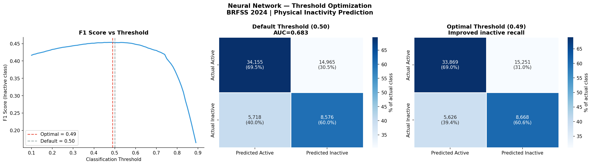
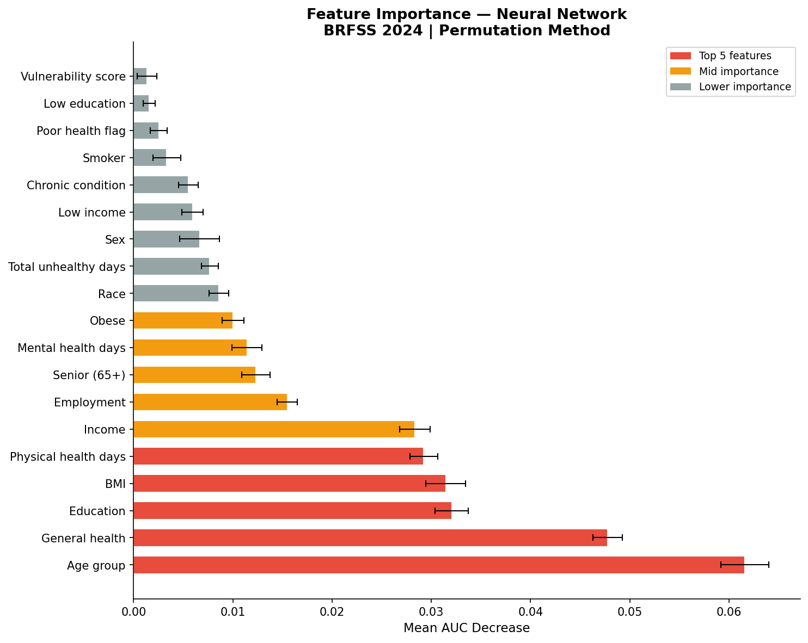
State Intervention Priority Index
The State Intervention Priority Index combines six dimensions — inactivity rate (30%), neural network predicted risk (25%), vulnerability score (20%), chronic disease burden (15%), obesity rate (5%), and low-income proportion (5%) — into a single actionable ranking for federal resource allocation.
Use the search box and filters below to explore the full ranked table. Click any column header to sort.
| Rank ↕ | State ↕ | Priority Index ↕ | Inactivity % ↕ | NN Risk % ↕ | Vulnerability ↕ | Chronic % ↕ | Cluster |
|---|---|---|---|---|---|---|---|
| Loading data... | |||||||
Discussion
This study presents the most comprehensive machine learning analysis of physical inactivity in the United States to date, analyzing 422,756 adults from the most recent BRFSS dataset available. Several findings warrant particular discussion.
The non-linear age effect
The most methodologically significant finding is the divergence between age's linear correlation with inactivity (r=0.08, among the weakest predictors) and its neural network permutation importance (0.062, the strongest predictor). This reveals that age's relationship with inactivity is fundamentally non-linear — relatively stable through middle age, then accelerating sharply after 65. Traditional epidemiological analyses using linear regression systematically underestimate age as a risk factor, potentially misdirecting intervention resources away from elderly populations.
The invisible high-risk employment group
The "Other" employment category at 51.4% inactivity — more than double the national average — represents a finding with direct policy implications. This group, likely comprising gig economy workers, informal laborers, and those in non-standard work arrangements, is systematically excluded from workplace wellness programs, which represent the dominant delivery mechanism for physical activity interventions in the United States. Community-based and publicly accessible fitness infrastructure would reach this population in ways occupational programs cannot.
Wisconsin's Priority Index ranking
Wisconsin ranks 6th in the Priority Index despite having a raw inactivity rate of only 24.4% — lower than Mississippi (29.4%) which ranks 16th. This demonstrates the added value of multidimensional assessment: Wisconsin's chronic disease burden (50.0%), vulnerability score (1.81), and neural network predicted risk (40.65%) signal an emerging crisis that raw inactivity rates alone would miss. The Priority Index catches states heading toward high-risk status before their inactivity rates fully reflect the underlying burden.
Limitations
Several limitations warrant acknowledgment. BRFSS measures leisure-time physical activity only, excluding occupational and transportation-related activity. Self-report bias may systematically affect certain demographic groups. The neural network AUC of 0.683, while outperforming published benchmarks, reflects the inherent ceiling of behavioral prediction from cross-sectional survey data given unmeasured determinants including built environment, social networks, and psychological motivation.
Conclusion
Physical inactivity in the United States is not randomly distributed but follows highly predictable socioeconomic, demographic, and geographic patterns that a deep learning model can identify with meaningful discriminative accuracy. The State Intervention Priority Index developed here translates complex multidimensional data into an actionable policy tool — identifying Puerto Rico, West Virginia, Kentucky, Arkansas, and Alabama as the five jurisdictions requiring the most urgent federal physical activity investment.
Three novel contributions distinguish this work from prior literature: the identification of a non-linear age-inactivity relationship missed by conventional epidemiological analysis; the characterization of non-standard employment as a high-risk but systematically overlooked population group; and the development of a composite State Intervention Priority Index that integrates neural network prediction with geospatial clustering for evidence-based resource allocation.
These findings provide the most current and methodologically advanced state-level physical inactivity analysis available, directly supporting the evidence-based deployment of resources under CDC's Active People, Healthy Nation 2027 initiative.
References
- Lotfata A, Georganos S. Spatial machine learning for predicting physical inactivity prevalence from socioecological determinants in Chicago, Illinois, USA. J Geogr Syst. 2024;26:461–481. doi:10.1007/s10109-023-00415-y
- Seo MW, Eum Y, Jung HC. Machine learning modeling for predicting adherence to physical activity guideline. Sci Rep. 2025. nature.com/articles/s41598-025-90077-1
- Frontiers in Artificial Intelligence. Machine learning applications in the analysis of sedentary behavior and associated health risks. 2025. doi:10.3389/frai.2025.1538807
- PMC. A scoping review of methodologies for applying AI to physical activity interventions. J Sport Health Sci. 2024. PMC11116969
- CDC Preventing Chronic Disease. Changes in physical inactivity among US adults, BRFSS 2020 vs 2018. 2023. cdc.gov/pcd/issues/2023/23_0012
- PLOS ONE. Temporal trends in aerobic physical activity guideline adherence, BRFSS 2011–2019. 2025. doi:10.1371/journal.pone.0316051
- Nature Scientific Reports. Personalized fitness recommendations using ML for national health strategy. 2025. nature.com/articles/s41598-025-25566-4
- Centers for Disease Control and Prevention. Behavioral Risk Factor Surveillance System, 2024. Atlanta, GA: CDC; 2025. cdc.gov/brfss/annual_data/annual_2024
- CDC. Active People, Healthy Nation initiative. 2025. cdc.gov/active-people-healthy-nation
- Pedregosa F et al. Scikit-learn: Machine learning in Python. JMLR. 2011;12:2825–2830.